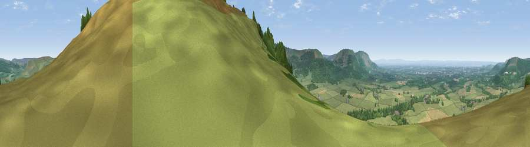

Viewpoint near Ingleby Greenhow
#3737 in England · top 15% of its area beats it · near Ingleby Greenhow · open accessWhere it is
The exact computed spot (NZ 59775 05850). Click the marker for map links.
Public access: this spot lies on mapped open-access land (CRoW Act 2000) — you may roam here on foot. Computed from Natural England's CRoW access layer and OpenStreetMap rights of way — not the legal definitive map. Always verify locally.
The view, rendered

A 360° render of this exact spot computed from the terrain model, tree cover and land cover — summer colours, afternoon light, calibrated against photographs of famous viewpoints. Real trees, hedges and buildings will differ in detail.
The panorama
Grey silhouette: terrain skyline in each direction (720 bearings, Earth curvature and refraction included). Dashed green: skyline with trees (+15 m) and buildings (+8 m) as obstacles. Blue strip: how far the ground is visible on each bearing.
Where the view opens
Wedge length = distance to the farthest visible ground on that bearing (vegetation-aware). Rings at 10, 25 and 50 km.
What fills the view
53% grassland · 37% woodland · 9% cropland ·
Angular shares of the visible panorama (visual magnitude), not map area. Landscape diversity 0.42 (0–1 Shannon).
Key numbers
More beautiful places nearby
The staircase of upgrades: each row has a higher view potential than everything closer. Driving times are estimates from straight-line distance, calibrated against real road routing — check an actual route before setting out.
| Place | Direction | Drive | Score |
|---|---|---|---|
| Viewpoint near Ingleby Greenhow | SSE · 1 km | ~3 min | 76.0 |
| White Hill | WSW · 4 km | ~9 min | 84.2 |
| Viewpoint near Great Broughton | WSW · 4 km | ~9 min | 84.4 |
| Viewpoint near Kirkby | WSW · 7 km | ~14 min | 84.9 |
| Roseberry Topping | NNW · 7 km | ~15 min | 85.8 |
| Viewpoint near Lazenby | NNW · 13 km | ~24 min | 86.4 |
| Warsett Hill | NNE · 18 km | ~31 min | 86.8 |
| Viewpoint near Easington | NE · 20 km | ~34 min | 90.2 |
54.44455, -1.07977 · source: screening · position refined by local search. Computed location — check access rights before visiting.